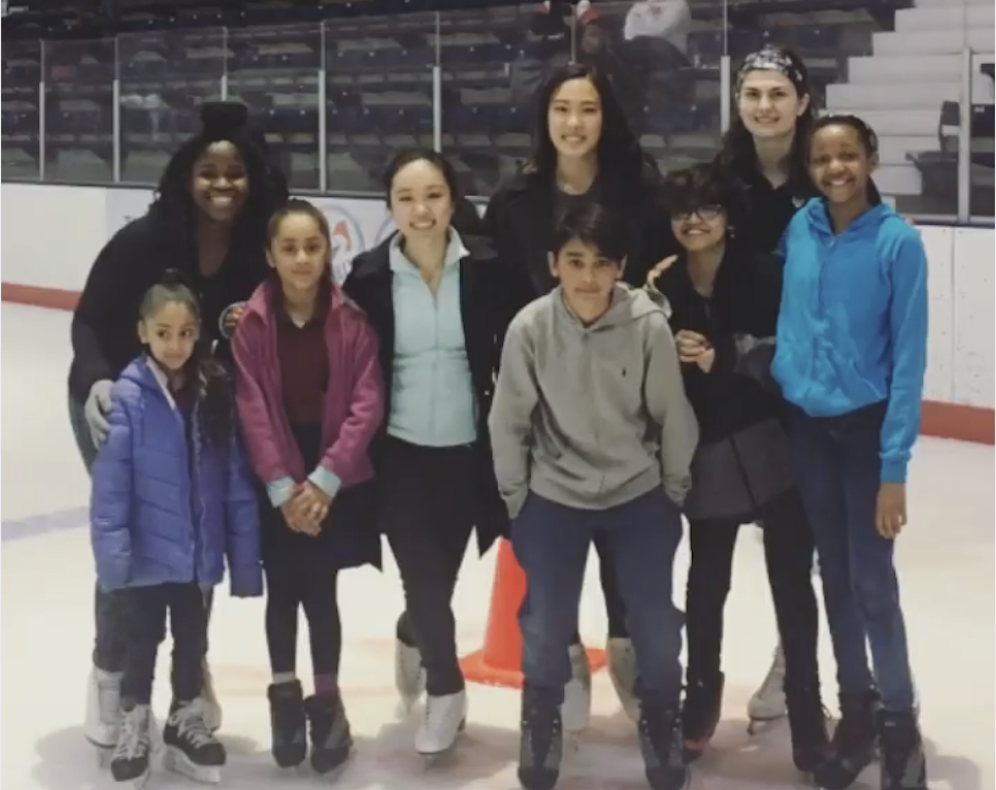

Clubs & Leadership
UPenn Figure Skating Club
Founding Executive Board Member
The UPenn Figure Skating Club serves both the Penn and Drexel University student bodies. I was a member of the club's founding board. In my first year, I was Treasurer for the club, and for the following two years I served as Show Director.
I have directed the production of four large-scale figure skating performances. This involved coordinating rehearsals for group numbers, finding costuming, managing sound and lighting on the day of the show, recruiting and managing show volunteers, devising a setlist, and serving as liason between the performers, executive board, rink management, and spectators.
Our shows are open to skaters of all levels from beginners to internationally-recognized competitors, undergraduates to university professors. We are devoted to inclusivity, and we use our funds to help defray the cost of this expensive sport for our members.
As a club that receives zero funding from the university, we rely on our shows to bring in most of our funds. Each show has seen an increase in attendance and profits, with our latest show (pre-COVID) attracting over 300 spectators and earning over $3000.
During my time on board, we have grown club membership from around 15 students to over 100 students. I have taught figure skating lessons to interested Penn and Drexel students, and through the club, I have developed ties with the Greater Philadelphia community, volunteering to teach skating to local children via a partnership with the Police Athletic League.

Women in Computer Science
Executive Board Member
Women in Computer Science (WiCS) strives to provide a community for women in tech-related fields at Penn. I have served for two years on WiCS Leadership and on the executive board as Director of Community. WiCS focuses on providing professional development, social events, and mentorship for women in CS.
In my role on board, I focus on community building for our many members by organizing events such as game nights, arts & crafts, and wine & cheese evenings.
Through WiCS, I have also participated in The Percentage Project, which is a social media campaign that uses data and images of CS students to call attention to the diverse experiences of students in STEM, particularly surrounding issues like impostor syndrome and discrimination faced by underrepresented minorities.

Penn Bioethics Journal
Associate Editor
The Penn Bioethics Journal (PBJ) is the premier peer-reviewed undergraduate bioethics journal. Embracing the interdisciplinary nature of bioethics, PBJ reviews and publishes original work addressing debates in medicine, technology, philosophy, public policy, law, theology, and ethics, among other disciplines.
We publish two issues per year, and as an associate editor I participate in the double-blind peer review process by evaluating, voting on, and editing submissions.